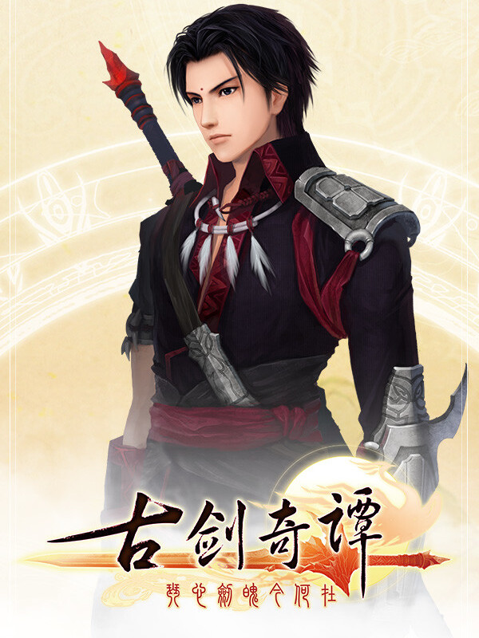

古剑奇谭(GuJian)
古剑奇谭(GuJian)
Details
|  | |
| Playtime | 3h 4m 0s |
| Last Activity | 15/01/2024 20:10:48 |
| Added | 16/01/2024 11:43:02 |
| Modified | 17/05/2025 23:35:26 |
| Completion Status | Played |
| Library | Steam |
| Source | Steam |
| Platform | PC (Windows) |
| Release Date | 10/07/2010 |
| Community Score | 50 |
| Critic Score | |
| User Score | |
| Genre | Role-playing (RPG) |
| Developer | Aurogon |
| Publisher | Wangyuan Shengtang |
| Feature | Single Player |
| Links | Steam Official Twitch |
| Tag | Drama Great Soundtrack Martial Arts RPG Story Rich Turn-Based |
Description

《古剑奇谭：琴心剑魄今何在》（《古剑奇谭》）由网元圣唐旗下上海烛龙自主研发，于2010年7月正式发行，是国内首部全程配音的大型3D仙侠类单机角色扮演游戏。
游戏采用架空的历史设定，在其中融入了众多真实的人文地理风貌，通过合适的方式，将这些带有浓郁古韵和中国味的风物呈现在玩家的眼前。游戏选用了淡柔的色彩风格，匹配较为写实的贴图材质，和真实比例的场景建模，佐以雾效、景深等程序支持，描绘出了一个风格清丽，古韵浓郁的游戏世界。而游戏中独特的战斗系统、星蕴系统、成就系统、特色辅助系统等，也获得了玩家的盛赞。
仙峦百千丈，不知日月衰。步入红尘、身携上古凶剑的谜样少年百里屠苏，机缘巧合邂逅了温柔少女风晴雪、年少书生方兰生、江湖浪子尹千觞、神秘女子红玉，以及一心倾慕于他的娇俏女孩襄铃，就此踏上了追寻重生之法和生命价值的传奇旅途。
一缕由上古时代流传至今的袅袅仙音，远古宏伟的神秘遗迹、梦幻美丽的公主，那远去的沧海桑田、芬芳的梦中桃源，难以想象的惊世情缘将会悄然展现在众人眼前。
天上人间，命途交错，看似遥不可及的终点，等待百里屠苏的又将是何种离奇的命运？